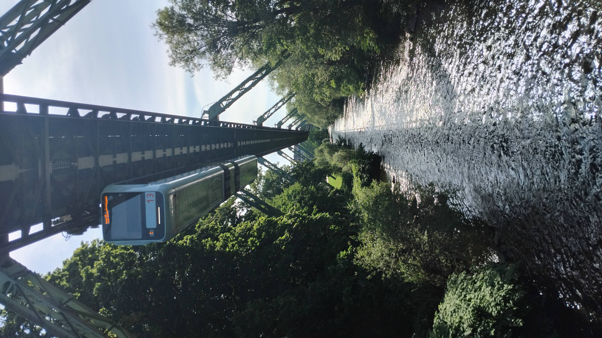
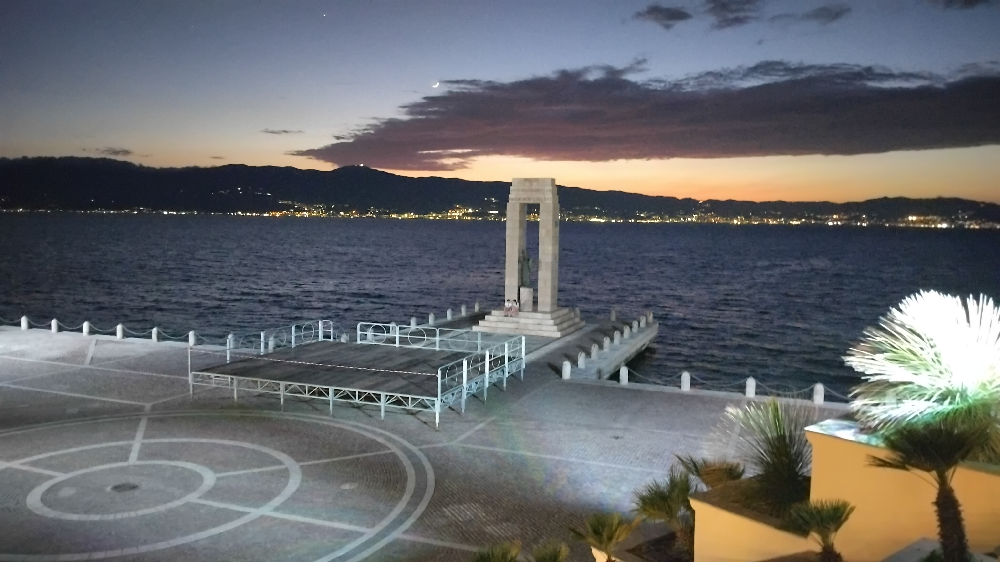
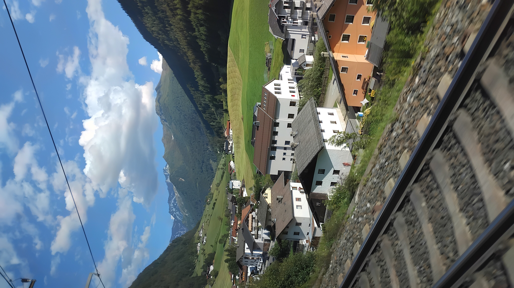

It started with a cheap flight out to Italy and ended up becomming quite the adventure. Over 2 different trips, I managed to visit 7 different countries (travelling on trains in all of them, of course) and had a great time exploring a couple of U-Bahn systems as well. This page gives a brief summary of where I went and how I got there - the links will take you to some photos and a bit more information about each of the days. It goes without saying that these are based off the early summer 2026 timetables, and they almost certainly will have changed since.
A fairly uneventful day really. Started off with getting the train and then DLR to London City Airport. Managed to get from the DLR through security in less than ten minutes, though I then ended up hanging around for ages as my bag didn't scan on the X-Ray machine initially and so had to go through again! There weren't any direct flights to Reggio on a Tuesday, so I went via Milan Linate - it was a shame it was a cloudy day in the UK so I couldn't see too much of our climb up and over London.
I had about four hours to make the connection, so I popped on the metro into the city centre and had a very civilised sandwich in the park. I even managed to hop on a tram on the way back to spice up my life a bit. The second flight was also nice and easy, and it was great fun being able to step off the train and be out of the airport in about two minutes! A nice pizza for dinner (when in Italy...) did me nicely and I ended the day with a wander through the city.

Once I'd found a cheap flight, I then pondered what the longest train journey I could (sensibly) do that day would be. It turns out it's a Frecciarossa service all the way through to Turin, going via Bologna, Rome and Milan on the way. Having a play on the Trenitalia website, I found four classes and (since I was on holiday) I decided Executive class was the one for me. 190 Euros later and the tickets were all booked - it transpires that if you register for Carta Freccia, they give you a one-time upgrade and I was able to save myself €110. Result!
Executive Class is a lovely way to travel - you get a gorgeous armchair (it's much nicer than a seat) to sit in which can recline up to about 45 degrees. Food and drink is all included in the ticket price and there's a very extensive menu to pick from. If you're going to want a couple of meals and are a fussier eater, it's probably worth flicking through it in advance as a lot of the lunch and dinner options are the same. I ended up having two meals onboard with plenty of drinks and snacks the whole day. There's even a full blown boardroom in the carriage if you need to have a meeting, because why not! The crew was absolutely lovely and I think we got on very well, even though they were speaking to me almost entirely in Italian and my knowledge doesn't extend much beyond grazie mille!
The journey itself was very pleasant. I think a regular byproduct of spending most of the time eating is that you don't spend too much time looking out the window, but the Italy that I did see was all very agreeable. Zooming allong at 300 km/h sipping prosecco and nibbling raisins is a lifestyle I could get used to! There were some problems with the overhead wires just before Milan so we were decamped to the conventional lines for a bit, though that didn't spoil my mood and it's certainly a way which I would like to travel again!

Another very pleasant day (yes, there's a theme here) started with a hot chocolate and pastry in a cafe round the corner from my hotel. It was then back to Porta Nuova and onto another Frecciarossa to Milano Centrale. This was 'just' in Business Class which comes with a nice comfy seat and some water, juice and sandwiches. The latter were tiny and full of meat - be warned! Being a cheapskate and not wanting to pay another €13 for a seat to Verona, I then hopped on a local train. We skirted the south tip of the Lago di Garda, giving me to reminisce of a previous trip where I took ferries here, there and everywhere over the lake.
I had a little bit of time in Verona so wandered into town in search of food and picked up a sandwich for lunch. I then got to enjoy my first bit of loco hauled action of the trip, on board an ÖBB service up through Inssbruck to München. This was pretty popular and the scenery certainly didn't dissapoint. Climbing up through the mountains towards the border was wonderful, and then as we left the border station and entered Austria properly the road viaducts and vastness of the lanscape really did take my breath away.
I managed to sample an apple cider soup and lasagne when we were a couple of hours out from Munich - it turns out that the menus had changed that day, meaning everyone was confused what was available, in stock and ready to be eaten! After a trip to the buffet counter, the food was served at my seat and I was able to enjoy our arrival into Munich. From there a quick U-Bahn across town got me to my hotel.
A more leisurely start to the day today, which began by seeing a bit of Munich. I had a little walk around my hotel, then headed across town to the Allianz Arena. The classic tourist picture outside the stadium followed, before I decided that I needed something older and so headed for the Olympic stadium and Olympic park. Time then caught up with me so I headed back to Hauptbahnhof. My booked train to Nurenberg was far too full for my liking (they'd been a previous cancellation) so I hopped aboard the next one.
Nothing really to report on that one - I thought I'd have plenty of time to change but we ended up getting held outside the station such that it was squeaky bum time and a mad dash across to the other side of the station. Thankfully, it seemed, DB had chosen to be merciful to us and the train was held. We got moving and I looked at the app to discover I was in the wrong part of the train! We had four two-carriage trains coupled together - I needed the front two sets and I was currently at the very rear. Some mad unit hopping ocurred at our next couple of stops until I was finally able to settle into my seat knowing I would indeed end up in Hof.
The next leg was onwards to Zwickau - I can't remember any of it which means it was almost certainly uneventful! I dashed to Kaufland (my new favourite shop) on the other side of the tracks and then boarded my next S-Bahn train towards Leipzig. The original plan was to continue to Haale and change for an ICE there, but a couple of days before I received an email from DB telling me that this train was instead going via Leipzig instead. However, to throw another spanner in the works, DB was having one of its days and this rerouted train ended up cancelled. It seemed the least worst option was to change in Haale - I stopped at the station for some food of course!
I got to the platform in plenty of time, but of course DB had decided the fun wouldn't end there - the train kept getting later and later until it arrived about 40 minutes behind schedule (so 100 minutes late by the original timings). The journey to Berlin was uneventful, but all in the dark so nothing to report. The U-Bahn at Hbf was nice and simple and I arrived at the hotel at not too stupid a time. Thank goodness for 24 hour reception!
This was a Saturday, so there was only one way to start the day - Parkrun! I ended up going for Tempelhofer Feld which had only started a couple of months previously. It's run on the former Berlin airport, meaning it's tarmacced all the way and completely flat. A fast course you'd think: well, it probably would be were it not for the 30-degree heat! Yup, central Europe was in the middle of a heatwave which made this journey uncomfortably hot. I persisted and enjoyed a well earned drink of water at the end!
The rest of the day was spent pottering - I went up to Teufelsberg, an abandoned Cold-war era listening tower used by the West to 'spy' on the USSR (of course a whopping great ariel on a big hill hardly goes unnoticed so it seems the Soviets had some fun). The Olympic stadium (there's a theme here...) was also nearby so I popped over to take a couple of pictures. It was getting late-ish by this point, so I fired up ChatGPT and asked for some scenic or historically interesting U-Bahn stations to fill an hour or so. It provided the goods and I potterred around for a bit before having some lunch. A slower day, but still an action-packed one.
I didn't want to risk anything too mad on a Sunday so planned a one-train hop across to Düsseldorf. I decided to go a slightly more interesting way to Hauptbahnhof, ending up on both U-Bahn and S-Bahn trains, but arrived at the platform to be greeted by a message that we'd be twenty minutes late - a 'delay in train preparation' was the excuse. The train rolled in and was two ICEs joined together. The problem was that nobody knew which end was which! The app gave one orientation, the carriage displays gave another and then updated once we'd left Hbf, confusing just about everyone! I popped across the platform at the first stop as there were some mumblings that we may divide, though in the end the whole train did run through. I say that, we did have another funky diversion due to 'an interlocking problem' in the Duisburg area and arrived 62 minutes late. Yipee - €12 from Interrail!
One perk of being so late was that I was able to check in and dump my bags in the hotel room, before setting off again to Wuppertal. This was the main reason I'd based myself in Düsseldorf as I'd wanted to see this mad system in the flesh. Let's say it didn't dissapoint. I worked my way all the way down to Oberbarmen, stopping at a few places along the way, and took plenty of photos. Beyond the fact it looks so futuristic, there's a charm in all of the stops having their own unique design and character. There was a really good churn of passengers for a weekend and even an undercover ticket inspection which was good fun! I clocked that a heritage train was out and about and managed to snap that too, so I feel as though I've completed the Schwebebahn. There's not much more to say - it's the sort of railway you can't really describe and must experience!
An actioned packed day which, thanks to being on DB metals for the majority, did not go to plan! The signalling problems from the previous day were still ongoing, meaning that my preferred connection out of Düsseldorf was stupidly late. A bit of quick thinking saw me on an earlier (delayed) S-Bahn service, allowing me to arrive in Köln in time for my onward connection. This was gorgeous - I had specifically picked this service as we hugged the western bank of the Rhine for most of the way to Frankfurt Airport: there were some scintilating views out of the window. At points we could see the tracks on the other bank, so I was even able to do some bonus trainspotting on the move!
Things went wrong in Frankfurt Flughafen again, as more delays meant my next connection was in jeopardy. Thankfully ICEs to Mannheim run every 30 minutes and were all up the spout, so I ended up jumping on a train at more or less the time that I should have done anyway! Another fairly uneventful journey followed, and I ended up at Mannheim with time for lunch. The next train was a Swiss one, which you'd expect to be on time but wasn't - this section was oprated by DB so I'll forgive their otherwise exemplary punctuality. We dodged a bullet as a train had sat down earlier just outside the station, but the disruption had cleared and so were able to pass more or less unimpeded.
That broken down train meant my next service to Konstanz was terminated short in Singen, but thankfully an S-Bahn followed closely behind and the only loss was a bit of time in this border town. I managed a quick walk through town and down to the lake before heading back for the final push via St Gallen to Chur. It was getting late for these bits and the light was going a bit but, given we'd entered Switzerland properly, everything ran like clockwork. I also got another stint on what very quickly became my favourite type of trains. They felt very FLIRT-y and similar to Greater Anglia's 745s and 755s - though obviously nicer as somebody had a bit of extra money to spend!
I'd been really looking forward to this day as I knew that the lines up and over the mountains were scintillating. I happened to be given a book of scenic railway journeys a couple of weeks later, and the Landwasser Viaduct featured on the home page of this website was on the cover! The first train was lovely, with a map on the tables of some of the landmarks we'd encounter on the way and billingual (and in some place trillingual) announcements drawing out attention to these as we went past. The scenery, as you would expect, was gorgeous - you wouldn't know how hard the train was working to propel itself over the mountains and into St Mortiz. As with both halves of this line, we were constantly cutting across the sides of the mountain across bridges and through tunnels: you couldn't help but wonder what an engineering marvel the Bernina Railway is.
The plan was to take one of the touristy trains (but in the 'regular' section) back into Italy and towards Tirano but it transpires that all of the First Class seats had been booked up by larger parties and I'd have to sit in the crowded 2nd class section. I wasn't in any rush so stepped back a train and got one half an hour later. This was great, with windows which could be pulled down so you could see (and get some gorgeous shots) of the alpine landscape - Mt Awe being a true highlight. The last third or so then settled down as the elevation dropped, but again you couldn't help but wonder how they had built the line. It really was epic and I'd love to go back in the winter and see everything covered in snow. It's also worth noting it was electrified throughout - a very stark contrast to the local Italian train which chugged away on diesel.
That Trenitalia train wasn't very pleasant at all. The first stretch was relatively boring chopping down to Lake Como, though the scenery improved a bit as we hugged the lake's shores. Just as I was getting comfortable, we pulled into what must have been the major hub and the whole 8 carriage train goes from empty to standing room only in an instant. The passengers decided to declassify First Class for themselves and it was a pretty miserable ride though to Monza. There was one point where I was worried that I wouldn't be able to squeeze off!
I think perhaps by this point I was getting a bit tired of travelling and my memory of this day isn't very strong - perhaps that's also a reflection that it wasn't too exciting. The first train from Monza was busy, though emptied out as we crossed the border. I was able to wander down to the shore of the lake in Lugano, though realised I was cutting it a bit fine for the train to Bellinzona and ended up a sweaty mess by the time I'd run up the (many) stairs back to the station. Bellinzonza gave me an opportunity to climb up to the castle and see the city from above, though again I didn't stay too long. I went the 'scenic' way to Olten rather than via the Gotthard tunnel. I recall this being pleasant, but obviously nothing compared to the Swiss trains the day before, meaning I didn't really appreciate the scenery.
A quick change of trains in Olten took me into the French part of Switzerland. It's amazing how much the atmosphere changed in this bit: I can speak a fair bit of German but next to no French and it suddenly felt very hostile with people tending to be much less friendly. That train was very hot and sticky and changing at Rennens onto a double decker train to the airport didn't provide much respite. I got to see some of Geneva (and just about manage to get dinner without needing to ask the bank nicely for some money) in the evening, but it didn't feel like there was much going on - I wasn't dissapointed when I had to leave.
Again, I was tired by this point and was pleased that a flight home was just around the corner. The day started off with a walk through what felt like an abandoned corridor to clear the customs checkpoint and jump on the SNCF train. First class was very busy on this train and, to keep the temperature down, the window blinds were closed. I daren't try and learn the French for 'can I open them so I can look out the window please?' and so I couldn't catch much of the scenery. It felt pleasant enough.
I was supposed to have half an hour in Lyon before dissapearing on a TGV to Toulouse. That transpired to be quite optimistic. Our train was formed of two sections - one part came from Paris and detached at Marseille whilst our bit came from the depot and ran through to Toulouse. We all rocked up with plenty of time and got comfortable as our train pulled in a little late. We then found out (or rather everybody else found out and I waited for someone to translate) that the other half was running about 45 minutes late due to speed restrictions because of the heat and we'd be here some time. The other train duly arrived but we then got some further bad news - a tractor had ploughed (ha ha...) through the barriers at a level crossing down the line and all trains were at a stand. This held us back for another 45 minutes until all of a sudden there was a flurry of activity and everyone who had stood on the platform was ushered back onto the train. We left about 90 minutes late and ended up a smidge under 2 hours late on arrival at Toulouse. I'd booked four and a half hours between train arrival and flight departure so I was slightly pannicking and hot footed it over to the airport. It transpired that Ryanair had done its thing and we would be an hour - time for a sandwich before the flight back home.
I might have done 10 days of travelling but I'd only used 8 days of my Interrail pass and, crucially, had an 'inbound' day left. I therefore hatched a plan and, with 48 hours off work, worked out how I'd use these last few days. A cheap flight to Alicante proved to be the answer.
There's not really much to say here - a taxi to Birmingham Airport and a nice Jet2 flight to Alicante airport. It was my first time flying with Jet2 and I must admit I was very impressed: it's a low cost airline but it feels 'nice' and everyone was friendly and polite - culture in a company is important and they definitely seemed to have the write culture. Managed to practice a wee bit of Spanish on the bus to the city centre un billete de ida, por favor and then headed to the hotel for a kip!
Renfe, for all the grief they get online about timetables and reservations, were a seriously impressive operation. I'd sussed out that I wanted their full Premium experience and had booked the appropriate 23,50 EUR reservations online. I was slightly worried when, under the menú section on my ticket, it said sin disponsible (not available), but a quick call to Renfe customer services (my goodness there's a lot of languages to choose from...) confirmed this was standard pratice for Interrail reservations and all would be okay. Okay it certainly was. I began my day with a trip to the Sala Club lounge at Alicant-Terminal. This was very well stocked with sweet breakfast treats and hot and cold drinks. You could even, if you were that way inclined - have a beer! The television in the corner seemed to be covering (yet another) Sanchez scandal, and there was one Spanish chap nodding along very enthusiastically behind me.
The experience onboard was just as nice. It turns out regular and Premium 1st class passengers are seated in the same carriages and the hosts simply have a list of whose paid for a meal (a perk of mandatory reservation) which they offer accordingly. I enjoyed being singled out straightaway as el hombe amarillo (the yellow man) based on the T-shirt I was wearing - they clearly figured my Spanish was of a level where I wouldn't understand them. The service was very efficient with a couple of rounds of drinks, plenty of bread rolls offered and generally warm hospitality. I was worried that one of the three options was no good for me, but thankfully I was simply offered the hot option (which seemed to be the only one left) which I took quite happily. Apart from some foul tasting fruit puree, it was all very agreeable.
We arrived into Charmatín and I needed to get across to Puerta de Atocha station in Madrid. There's a few Cercanías lines to take which will do the job - I initially started by going in the wrong direction but everntually worked it out and made it to Puerta de Atocha with an hour or so to lounge about in the Sala Club again. The service on this next train was great - the food was lovely and filling and I could have some authentic gazpacho (which the crew then seemed to guzzle down in the kitchen afterwards!) which is always a bonus. Something which really stood out was the resilience in Spain's High Speed network. A train had failed in front of us but, rather than sit and wait until it could be moved, we were able to use a signalled crossover, run 'wrong direction' (albeit signalled so still at 100-odd km/h) past the train, and cross back again. Sure, we picked up 25 minutes of delay, but you consider the delay trains pick up when something fails going over Shap and you can be nothing but greatful!
I had a little bit of time in Málaga before heading to the airport to catch a Transavía flight to Paris-Orly. I'd somehow managed to book on the Spanish site and so all the information was sent to me in Spanish - it was no big deal as I could work it all out but it did amuse me as all annoucnements were in French or English with no Spanish on the plane at all! I got treated to a quick tram ride to my hotel on arrival and I then went straight to bed as, guess what, the plane was about an hour late again!